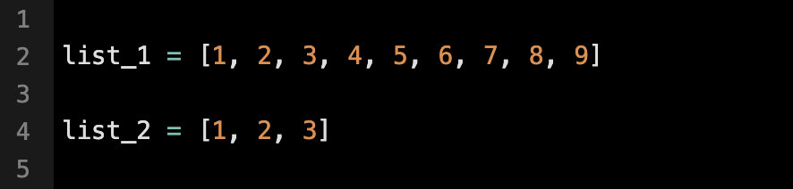

In Python, a list is a sequence data type that stores a collection of objects in a single variable, separated by commas. Lists maintain order and can hold various data types, including strings, integers, and booleans. Because lists are mutable, they are ideal for handling dynamic data that may change over time.
Lists in Python can be created using square brackets ([]) or the built-in list() constructor. Regardless of the method used, the initial values must be separated by commas. The example below demonstrates how lists can contain items of the same type or a mix of different data types.
List items are ordered, changeable, and allow duplicate values. The list items are indexed and the first item has an index of 0, second has an index of 1 and so on
This means that each item has a specific position that remains consistent. When new items are added, they are automatically placed at the end of the list.